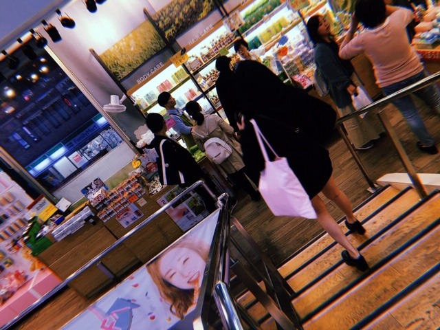

2019/0414Sunちょきちょきしたよ
と、言っても前髪を切っただけです！が
髪色を、暗めにしました〜
名前は
#kittengrey だそうです☺︎
初めてグレー系にしました

子猫ちゃん色なんだって✨
ちょっとブルーも入ってて本当に猫みたいな髪色！
猫は詳しくないけどスコティッシュとノルウェージャンフォレストキャットがかわいいなあって思います
ツンデレなところも猫の魅力ですよね
ツンデレなところも猫の魅力ですよね
犬は甘々さんだからそこも可愛いし
結局みんな違ってみんな良い...
最近は映画ハロウィンを公開日に母と観に行ってきました！！ずっと楽しみにしてた！ブギーマン！
カメラアングルと音が絶妙で
最近は映画ハロウィンを公開日に母と観に行ってきました！！ずっと楽しみにしてた！ブギーマン！
カメラアングルと音が絶妙で
終始ハラハラドキドキしてました
強い女性ってホラー映画に時々出てくるけどめちゃくちゃかっこいいんですよ...
子供や自分を守る為に強くあろうとする姿にハッとさせられます
私の人生テーマの1つに
強い女性になること
があるので。頑張ります。いろんな意味での強さを身につけたいな
強い女性ってホラー映画に時々出てくるけどめちゃくちゃかっこいいんですよ...
子供や自分を守る為に強くあろうとする姿にハッとさせられます
私の人生テーマの1つに
強い女性になること
があるので。頑張ります。いろんな意味での強さを身につけたいな

去年の秋かな？夏前かな？の写真なのですが
これくらいまで地毛で伸ばしたい気分☺︎
そしてホットギミック ガールミーツボーイ
の取材が先日ありました！
久しぶりに亮輝、初、梓、凌 4人集まったけど相変わらず和気藹々と楽しい時間だったなぁ✨
早く皆さんに映画を観ていただきたいです
そして公式Twitter
も、是非フォローよろしくです
オフショットやらいろんな情報がこれから投稿されていきます！
フォロワーさんが増えると良いことがあるかも...？
お楽しみに☺︎

ネイルチップが最近はお気に入り！
これは新大久保で買いました〜ラメ好き
犬飼ってる家あるあるだと思うのですが、パーカー毛だらけになりませんか？？？
わたし何回コロコロしてもダメ...笑
この写真も若干のプティとニコルの毛が見えます...笑
抜け毛問題...(´ｰ｀)

この猫ちゃんかわいい。笑
dancing〜
でははははは

2019/04/14 12:24
コメント(343)
未央奈やっぱかわいい❗️
こんばんは。セブンやよ(ฅ'ω'ฅ)♪
今日も1日お疲れさまでした
ホットギミック楽しみです
ザンビでの演技もかっこよかったし
女優としての堀未央奈を早く観たいです
未央奈はもともとネコ顔だから
髪色までネコにしたらもう猫娘だね
可愛くて好きです♡
では、明日も1日楽しもうd(@^∇ﾟ)/ﾌｧｲﾄｯ♪
o(ﾟ▽＾)ﾉｼまたねぃ♪
今日も1日お疲れさまでした
ホットギミック楽しみです
ザンビでの演技もかっこよかったし
女優としての堀未央奈を早く観たいです
未央奈はもともとネコ顔だから
髪色までネコにしたらもう猫娘だね
可愛くて好きです♡
では、明日も1日楽しもうd(@^∇ﾟ)/ﾌｧｲﾄｯ♪
o(ﾟ▽＾)ﾉｼまたねぃ♪
ブログ更新ありがとう！
今バイト終わって見ました〜
最近生活不安定になってきました
どーしたらいいのかな？笑
未央ちゃんは体調の方は大丈夫ですか？
23枚目のシングルで会いに行きたいです
待っててくださいね！
したっけ〜〜
どさんこしゅーちゃん
今バイト終わって見ました〜
最近生活不安定になってきました
どーしたらいいのかな？笑
未央ちゃんは体調の方は大丈夫ですか？
23枚目のシングルで会いに行きたいです
待っててくださいね！
したっけ〜〜
どさんこしゅーちゃん
未央ちゃん
ブログ更新ありがとう
髪切ったの～？(笑)
髪色落ち着いてて
イイ感じだね
爪も可愛い
体調気をつけてね
ブログ更新ありがとう
髪切ったの～？(笑)
髪色落ち着いてて
イイ感じだね
爪も可愛い
体調気をつけてね
可愛すぎる〜
どの髪型も似合ってるよ
どの髪型も似合ってるよ
でははははは
軽やか前髪～＾＾
こんばんは。ハロウィン、見に行かれたのですね。
なかなかホラー映画を映画館で見る勇気がありません。ブギーマンと戦うカーティスさんが熱い映画みたいですね。映画で強い女性といえば…
エイリアンのシガニーウィーバー
ターミネーターのリンダハミルトン
バイオハザードのミラジョボビッチ
トゥームレイダーのアンジェリーナジョリー
以上、ぱっと思いつきました。どの映画も女性が頑張った、強かったという記憶があります。
未央奈ちゃんの目指している強い女性像、とても素敵に思います。
ヘアスタイル似合っていますよ。美容室に行く事、リフレッシュになりますよね
パーカーにワンちゃんの毛がついても、気にせずに町に繰り出す未央奈ちゃんの強さ好きです。
明日からもまた頑張って下さい！
それではまた。
なかなかホラー映画を映画館で見る勇気がありません。ブギーマンと戦うカーティスさんが熱い映画みたいですね。映画で強い女性といえば…
エイリアンのシガニーウィーバー
ターミネーターのリンダハミルトン
バイオハザードのミラジョボビッチ
トゥームレイダーのアンジェリーナジョリー
以上、ぱっと思いつきました。どの映画も女性が頑張った、強かったという記憶があります。
未央奈ちゃんの目指している強い女性像、とても素敵に思います。
ヘアスタイル似合っていますよ。美容室に行く事、リフレッシュになりますよね
パーカーにワンちゃんの毛がついても、気にせずに町に繰り出す未央奈ちゃんの強さ好きです。
明日からもまた頑張って下さい！
それではまた。
こんばんは
髪いい感じやね。ネイルも素敵！
我が家の周りは野良猫ちゃんが結構います。
猫可愛いなぁって思います。
髪いい感じやね。ネイルも素敵！
我が家の周りは野良猫ちゃんが結構います。
猫可愛いなぁって思います。
ブログの更新ありがとう
俺は小さい頃から猫を飼っているんだけど、猫も可愛いよ。
今は2匹猫を飼ってるんだけど、まったく性格が違っていて、
一匹は人見知りで、親戚や俺の友達が家に来ると、必ずどっかに隠れてしまい、絶対に帰るまで出てこないんだよね。
もう一匹は人間が大好きで、親戚や俺の友達が家に来ると、膝の上に乗ってくるんだよね。
2匹とも性格はまったく違うけど、大切な家族だし大好きなんだよね。
動物の抜け毛については俺も分かるよ。
毎日ブラッシングしてるんだけど、暖かくなってくると抜け毛がスゴくて
しかも洗濯物が大好きで洗濯物の上に乗って寝ちゃうんだよね。
さらにはタンスの中が大好きで、少し扉が開いていると手で開けてしまいタンスの中で寝ちゃうんだよね。
だから洗濯物を畳むのは猫が寝ているとき、タンスは必ずしっかり閉めるようにしているよ。
ニコルくん、プティくんは、タンスの中で寝たり、洗濯物の上で寝たりしないの？
ゴロ～
俺は小さい頃から猫を飼っているんだけど、猫も可愛いよ。
今は2匹猫を飼ってるんだけど、まったく性格が違っていて、
一匹は人見知りで、親戚や俺の友達が家に来ると、必ずどっかに隠れてしまい、絶対に帰るまで出てこないんだよね。
もう一匹は人間が大好きで、親戚や俺の友達が家に来ると、膝の上に乗ってくるんだよね。
2匹とも性格はまったく違うけど、大切な家族だし大好きなんだよね。
動物の抜け毛については俺も分かるよ。
毎日ブラッシングしてるんだけど、暖かくなってくると抜け毛がスゴくて
しかも洗濯物が大好きで洗濯物の上に乗って寝ちゃうんだよね。
さらにはタンスの中が大好きで、少し扉が開いていると手で開けてしまいタンスの中で寝ちゃうんだよね。
だから洗濯物を畳むのは猫が寝ているとき、タンスは必ずしっかり閉めるようにしているよ。
ニコルくん、プティくんは、タンスの中で寝たり、洗濯物の上で寝たりしないの？
ゴロ～
ペットの抜け毛問題はかなり深刻で、コロコロが手放せない！
中日今現在4位だよ！。1078日ぶりに貯金だって
まだ分かんないけどさ、始まったばっかりだけどひとまずセリーグの各チームとの対戦は一巡したよ！
まだ分かんないけどさ、始まったばっかりだけどひとまずセリーグの各チームとの対戦は一巡したよ！
未央奈ブログ更新ありがとう！！
スープチゲ りょうだよ！！
まずは高校生活が始まって、忙しくてコメント遅くなってごめんm(_ _)m
髪型凄い似合ってると思う！！多分、坊主とか以外なら未央奈は顔が可愛いからなんでも似合っちゃうと思うんだけど、明るくない髪色とか本当に俺好き！！
俺はホットギミックを見に行くんだけど、映画館で見ることが本当に受験とかあって久しぶりなんだよね！だからすごい楽しみ（≧∇≦）
『強い女性』か！！未央奈も言ってたけど、多分色々な面で強いって言うのがあって、難しいんだよね(--;)
仕事が出来る女性。料理が上手い女性。子育てが上手い女性。単純に力が強い女性。とか本当に沢山あるんだよね！！
未央奈は十分強い女性だと俺は思うけど、ブログに書いてるってことはもっと強くなりたいんだよね！！
全力で俺は応援するよ！！けど強くなりたいと思いすぎて、無理だけはしないようにね！！
Twitter、インスタはもちろんフォローしてて、新たな情報とかが入ってくるのを毎日楽しみにしてるよ！！
犬とか猫は個人的には好きだけど、今は家族がダメって言うから飼えないんだよね（>_<）
けど大人になったら動物は飼ってみたいな！！
いつも思うんだけど、グレーのマスク可愛いし、カッコイイ。凄いあの未央奈の感じも好き(*´ω｀*)
早く握手会、スペシャルイベント《当たってくださいw》で未央奈と会いたいな~~~沢山話したい！！
後755で以前コメントしたんだけど、1月14日のパシフィコ横浜での個別握手会に全部の部で未央奈の握手会に参加したんだけど、それで最後の5部に、『ちょうど高校受験の１ヶ月前なんだよね！！』って言ったら『頑張って！！』って未央奈が言ってくれて、その言葉をずっと頭の中でリピートして、勉強を必死に１ヶ月間頑張って、結果志望校に合格することが出来ました。本当にありがとう。未央奈は覚えてないかもしれないけど、俺本当にその一言がなければダメだったかもしれないから。未央奈には感謝しかない。だから、こんなんで、感謝のお返しになるかどうかは分からないけど、これからもずっーと❝堀未央奈単推し❞で俺は応援し続けるからよろしくお願いします。
未央奈だけ大好き。
今回はここまで、本当に長文になっちゃってごめん。
また755でも同じ名前でコメントしてるから、もし良かったら目を通して欲しいな、そして返信も出来たらお願いします。
また明日から月曜日だけど、お互い頑張ろうね！！
(*>∀<)ﾉ))またねー
スープチゲ りょうだよ！！
まずは高校生活が始まって、忙しくてコメント遅くなってごめんm(_ _)m
髪型凄い似合ってると思う！！多分、坊主とか以外なら未央奈は顔が可愛いからなんでも似合っちゃうと思うんだけど、明るくない髪色とか本当に俺好き！！
俺はホットギミックを見に行くんだけど、映画館で見ることが本当に受験とかあって久しぶりなんだよね！だからすごい楽しみ（≧∇≦）
『強い女性』か！！未央奈も言ってたけど、多分色々な面で強いって言うのがあって、難しいんだよね(--;)
仕事が出来る女性。料理が上手い女性。子育てが上手い女性。単純に力が強い女性。とか本当に沢山あるんだよね！！
未央奈は十分強い女性だと俺は思うけど、ブログに書いてるってことはもっと強くなりたいんだよね！！
全力で俺は応援するよ！！けど強くなりたいと思いすぎて、無理だけはしないようにね！！
Twitter、インスタはもちろんフォローしてて、新たな情報とかが入ってくるのを毎日楽しみにしてるよ！！
犬とか猫は個人的には好きだけど、今は家族がダメって言うから飼えないんだよね（>_<）
けど大人になったら動物は飼ってみたいな！！
いつも思うんだけど、グレーのマスク可愛いし、カッコイイ。凄いあの未央奈の感じも好き(*´ω｀*)
早く握手会、スペシャルイベント《当たってくださいw》で未央奈と会いたいな~~~沢山話したい！！
後755で以前コメントしたんだけど、1月14日のパシフィコ横浜での個別握手会に全部の部で未央奈の握手会に参加したんだけど、それで最後の5部に、『ちょうど高校受験の１ヶ月前なんだよね！！』って言ったら『頑張って！！』って未央奈が言ってくれて、その言葉をずっと頭の中でリピートして、勉強を必死に１ヶ月間頑張って、結果志望校に合格することが出来ました。本当にありがとう。未央奈は覚えてないかもしれないけど、俺本当にその一言がなければダメだったかもしれないから。未央奈には感謝しかない。だから、こんなんで、感謝のお返しになるかどうかは分からないけど、これからもずっーと❝堀未央奈単推し❞で俺は応援し続けるからよろしくお願いします。
未央奈だけ大好き。
今回はここまで、本当に長文になっちゃってごめん。
また755でも同じ名前でコメントしてるから、もし良かったら目を通して欲しいな、そして返信も出来たらお願いします。
また明日から月曜日だけど、お互い頑張ろうね！！
(*>∀<)ﾉ))またねー
強い女性になりたいんですね(^ω^)
それも堀さんの目指す目標をかなえる手段です。ただ強さだけが全てではないんでね。
堀さんはまだ若く可能性がある。焦らず進めばいいと思います✨
話はかわりますが、僕は猫も犬も好きです(^O^)
割と最近の話なんですが、夜時々駐車場でなぜか出迎えてくれる変わり者の猫と仲良くなったんですよ✨
それで以前より猫も好きになりました(^^)b
それも堀さんの目指す目標をかなえる手段です。ただ強さだけが全てではないんでね。
堀さんはまだ若く可能性がある。焦らず進めばいいと思います✨
話はかわりますが、僕は猫も犬も好きです(^O^)
割と最近の話なんですが、夜時々駐車場でなぜか出迎えてくれる変わり者の猫と仲良くなったんですよ✨
それで以前より猫も好きになりました(^^)b
未央奈ちゃん、いつもお疲れ様です！
ホットギミック絶対みるよー！
これからも、頑張ってね‼️
FIGHT！
ホットギミック絶対みるよー！
これからも、頑張ってね‼️
FIGHT！
前髪を切っていい感じになったね！
髪色も暗くして、落ち着いた雰囲気になったと思います。
似合ってて可愛い
髪色も暗くして、落ち着いた雰囲気になったと思います。
似合ってて可愛い
こんばんわぁ！
お疲れ様です！
ちょきちょきとか言葉可愛すぎか( ´•̥ω•̥`)♡
お疲れ様です！
ちょきちょきとか言葉可愛すぎか( ´•̥ω•̥`)♡
未央奈お疲れ様！
ブログ更新ありがとう！
髪色めっちゃ似合ってるね！
子猫ちゃん色ってなんかかわいい笑
前髪かわいい笑
映画あんまり見てないなー
ハロウィン見てみたい！
ホットギミック早く見たい！
ネイルのその色すき！
これからも応援してる！
がんばれー！
ブログ更新ありがとう！
髪色めっちゃ似合ってるね！
子猫ちゃん色ってなんかかわいい笑
前髪かわいい笑
映画あんまり見てないなー
ハロウィン見てみたい！
ホットギミック早く見たい！
ネイルのその色すき！
これからも応援してる！
がんばれー！
かわいい
堀さんは、パーカーとマスクをつけててもかわいいですね！
その手の映画って
妙に芯の強い女の人いますよね(笑)
･･･
今回･･･
毛のブログ？(笑)
ペット事情はよく分からないんだけど、
親戚の家の犬に懐かれると毛、ついてる。
新大久保か～
今、どうなっています？
行ってないな～
じゃあ、今度からは子猫ちゃんで！
妙に芯の強い女の人いますよね(笑)
･･･
今回･･･
毛のブログ？(笑)
ペット事情はよく分からないんだけど、
親戚の家の犬に懐かれると毛、ついてる。
新大久保か～
今、どうなっています？
行ってないな～
じゃあ、今度からは子猫ちゃんで！
こんばんは。ブログ更新ありがとうございます。
#kittengreyのkittenってそもそも子猫って意味でしたっけ？kittyちゃんも確か子猫だったはず？
犬も猫も個体差があって、それぞれ性格も違って、人と同じように面白いですよね。ただ犬も猫もその他の動物も共通して、人に癒しを与えてくれます。それが不思議です。
ではまた。
#kittengreyのkittenってそもそも子猫って意味でしたっけ？kittyちゃんも確か子猫だったはず？
犬も猫も個体差があって、それぞれ性格も違って、人と同じように面白いですよね。ただ犬も猫もその他の動物も共通して、人に癒しを与えてくれます。それが不思議です。
ではまた。
ブログ更新ありがとう〜！
ハニーミルクベージュもkittengreyもとっても似合っていて可愛いです♡グレー系やったことないから、いつかやってみたいな〜。ハチだったり子猫ちゃんだったりカラーの名前も可愛くてテンション上がりそう…！
肩あたりまでの長さで外ハネ、すごく似合っていた印象があるからまた伸ばしてほしいな〜楽しみにしてます♪
ネイルチップの色もラメも可愛いし、未央奈ちゃん女子力高くて本当に憧れます⸜(*ˊᵕˋ*)⸝
色々あって今年は個人的に勝負の年で、新学期が始まるの緊張していたから、未央奈ちゃんのモバメだったりブログだったり雑誌だったり、すごく元気づけられています！
いつもありがとう！握手会も本当に楽しくて癒されました♡
ホットギミックのTwitterとInstagramフォロー済です！
更新楽しみにしています︎☺︎
ハニーミルクベージュもkittengreyもとっても似合っていて可愛いです♡グレー系やったことないから、いつかやってみたいな〜。ハチだったり子猫ちゃんだったりカラーの名前も可愛くてテンション上がりそう…！
肩あたりまでの長さで外ハネ、すごく似合っていた印象があるからまた伸ばしてほしいな〜楽しみにしてます♪
ネイルチップの色もラメも可愛いし、未央奈ちゃん女子力高くて本当に憧れます⸜(*ˊᵕˋ*)⸝
色々あって今年は個人的に勝負の年で、新学期が始まるの緊張していたから、未央奈ちゃんのモバメだったりブログだったり雑誌だったり、すごく元気づけられています！
いつもありがとう！握手会も本当に楽しくて癒されました♡
ホットギミックのTwitterとInstagramフォロー済です！
更新楽しみにしています︎☺︎
かわいい！
グレー系の暗めの髪色も結構似合っているよ。
ホットギミック公開も楽しみにしているよ。
ホットギミック公開も楽しみにしているよ。
韓国染まってるね〜！！良き◎
ねぇねえ！未央奈KCON行かないの？
19日当たったから行くんだ〜！
TWICEとIZ*ONEのLIVE観てくる（＾ω＾）
ミーグリも友達当てたから行ける〜☆
GWにあるファンミも当たると良いな〜
そういえば今日選抜発表だね〜！
どこの位置でも未央奈らしく！元気に活動して欲しい！
ばいぃ
ブログ更新ありがとう！
髪色めっちゃ似合ってる
大好き！
髪色めっちゃ似合ってる
大好き！
未央奈～ こんにちは
ブログ更新ありがとうございます。
「髪を切る」未央奈、そのたびに可愛いくなっていきますね。
映画「ホットギミック」、取材も始まりましたか、いよいよ近づいてきましたね。
「舞台あいさつ」っていうのが、映画館でありますよね。岐阜か名古屋でも‥‥、ぜひ出かけたいと思いますので、よろしくお願いします。
さて、今週は４thアルバムの発売ということで、「レコメン」も「乃木坂週」となりますね。特に水曜日は、３人の出演、しかも早い時間から‥‥、今からワクワクしています。
季節の変わり目て、体調崩しやすいので、気をつけてくださいね。
ブログ更新ありがとうございます。
「髪を切る」未央奈、そのたびに可愛いくなっていきますね。
映画「ホットギミック」、取材も始まりましたか、いよいよ近づいてきましたね。
「舞台あいさつ」っていうのが、映画館でありますよね。岐阜か名古屋でも‥‥、ぜひ出かけたいと思いますので、よろしくお願いします。
さて、今週は４thアルバムの発売ということで、「レコメン」も「乃木坂週」となりますね。特に水曜日は、３人の出演、しかも早い時間から‥‥、今からワクワクしています。
季節の変わり目て、体調崩しやすいので、気をつけてくださいね。
更新ありがとー
超絶かわいい(ﾉ≧▽≦)ﾉ
超絶かわいい(ﾉ≧▽≦)ﾉ
未央奈ちゃん、こんばんは～♪
お店で猫の人形を見たのですね。
僕の家には猫の顔をした枕の
ようなものがあります。
僕は猫だけが友達です。
人が怖く、人付き合いができないので
猫だけと付き合っています。
僕は猫のことを ドラえもん、
子ども、などと呼んでいます。
ハロウィンという映画があるのですね。
映画は今年は３本ほど見ました。
フェイト、ドラえもん、ローグワン を見ました。
今日は西野七瀬さんが出てるドラマを録画
したので、この後見ます。
ではまたコメントしますね☆
お店で猫の人形を見たのですね。
僕の家には猫の顔をした枕の
ようなものがあります。
僕は猫だけが友達です。
人が怖く、人付き合いができないので
猫だけと付き合っています。
僕は猫のことを ドラえもん、
子ども、などと呼んでいます。
ハロウィンという映画があるのですね。
映画は今年は３本ほど見ました。
フェイト、ドラえもん、ローグワン を見ました。
今日は西野七瀬さんが出てるドラマを録画
したので、この後見ます。
ではまたコメントしますね☆
可愛いです！ありがとうございます！
頑張ってください！応援しています！
頑張ってください！応援しています！
みおなちゃんの洋服、とんでもなくかわいい…全身コーデが見たいです！
今日も可愛くて可愛い
猫よりかわいいです。
愛してます♡♡
ドラマや映画もたくさん撮ってください。
韓国でも開封できますように。
猫よりかわいいです。
愛してます♡♡
ドラマや映画もたくさん撮ってください。
韓国でも開封できますように。
未央奈～こんばんは！
ぽてとです！
髪色も良いね！
髪型ももちろん！
ぽてとです！
髪色も良いね！
髪型ももちろん！
何故か日本ではハロウィンシーズンに公開しなかった！謎過ぎるブギーマン苦笑
最近のホラースリラーだと親子映画のヘレディタリー・継承とか親子物語で見応えあります。ホラーバトル繰り広げられる苦笑
今のところカルト的な作品だとラジオで映画紹介していたザ・バニシング・消失、が非常に物凄い
映画らしいので気になる・・・。主人公と一緒になってプレッシャーを感じながら想像をめぐらせる展開みたいだけど変わった作品らしく、本当に完全に予測不能！らしいから観た過ぎる・・・。
因みに、今月はマーベル映画集大成の完結編
アベンジャーズ・エンドゲーム早く観たい！！！
最後のアベンジへ！メンバーのその後と運命が気になります・・・。
それでは今日も頑張って行きましょう！！！
最近のホラースリラーだと親子映画のヘレディタリー・継承とか親子物語で見応えあります。ホラーバトル繰り広げられる苦笑
今のところカルト的な作品だとラジオで映画紹介していたザ・バニシング・消失、が非常に物凄い
映画らしいので気になる・・・。主人公と一緒になってプレッシャーを感じながら想像をめぐらせる展開みたいだけど変わった作品らしく、本当に完全に予測不能！らしいから観た過ぎる・・・。
因みに、今月はマーベル映画集大成の完結編
アベンジャーズ・エンドゲーム早く観たい！！！
最後のアベンジへ！メンバーのその後と運命が気になります・・・。
それでは今日も頑張って行きましょう！！！
夜分にすみません。
『グリーンブック』観ました。
『志乃ちゃんは自分の名前が言えない』も，今回の『グリーンブック』もそうですが，堀さんのおかげで観ることができました。
いずれも当初は，興味は持ったけれど時間を割いて見るほどでもないかなと思っていた作品ですが，堀さんが観たっていうなら，という思いで観てみた映画です。観て良かった。ありがとうございます。
『グリーンブック』観ました。
『志乃ちゃんは自分の名前が言えない』も，今回の『グリーンブック』もそうですが，堀さんのおかげで観ることができました。
いずれも当初は，興味は持ったけれど時間を割いて見るほどでもないかなと思っていた作品ですが，堀さんが観たっていうなら，という思いで観てみた映画です。観て良かった。ありがとうございます。
未央奈～☆☆
最近何度か髪色を変えてるけど、見るたびに
あ、これもめっちゃ似合う！
って思うんだよなー
未央奈のセンスが好きだからそう思うのかも知れない。
今回の髪色も綺麗な色で凄くいいね！
前回もそうだっだけど、今回も服の色合いとめっちゃ合ってて
雰囲気最高だよ。
ホットギミックも取材があったりして、
いよいよ公開が近づいてきたって感じだね。
公開までは、TwitterやInstagramで投稿される
情報を楽しみながら、気分を盛り上げて待ってるね。
最近何度か髪色を変えてるけど、見るたびに
あ、これもめっちゃ似合う！
って思うんだよなー
未央奈のセンスが好きだからそう思うのかも知れない。
今回の髪色も綺麗な色で凄くいいね！
前回もそうだっだけど、今回も服の色合いとめっちゃ合ってて
雰囲気最高だよ。
ホットギミックも取材があったりして、
いよいよ公開が近づいてきたって感じだね。
公開までは、TwitterやInstagramで投稿される
情報を楽しみながら、気分を盛り上げて待ってるね。
こんばんは(^^)
髪色変えるの早いね笑 今回のもとても似合ってます♩
2期生最高！プリン会万歳･:*+.\(( °ω° ))/.:+
髪色変えるの早いね笑 今回のもとても似合ってます♩
2期生最高！プリン会万歳･:*+.\(( °ω° ))/.:+
堀ちゃん
今日もお疲れ様です
前髪切ったの言われなきゃ気付かない俺はまだまだですね
髪色は暗くなってとても可愛いです（髪は少し伸びたね）
強い女性は確かに心惹かれるものがありますね
強い女性って自分の意志や信念を持っていてそれをどんな困難があっても最後まで曲げずに行動してるという共通点があると思います（例えるならバイオのアリスみたいな）
現実にそうゆう人って滅多にいないので、堀ちゃんは強い女性になれるように頑張って下さい（精神的な強さを）
ホットギミックの活動も本格的になってきたので、情報更新されるのを楽しみにしてます
23枚目のシングルですが、フロントおめでとうございます！
その事は是非またブログに書いて下さい（いつかまた堀ちゃんがセンターに立つ日も期待してます）
明日からまた頑張りましょう
ありがとうございました
今日もお疲れ様です
前髪切ったの言われなきゃ気付かない俺はまだまだですね
髪色は暗くなってとても可愛いです（髪は少し伸びたね）
強い女性は確かに心惹かれるものがありますね
強い女性って自分の意志や信念を持っていてそれをどんな困難があっても最後まで曲げずに行動してるという共通点があると思います（例えるならバイオのアリスみたいな）
現実にそうゆう人って滅多にいないので、堀ちゃんは強い女性になれるように頑張って下さい（精神的な強さを）
ホットギミックの活動も本格的になってきたので、情報更新されるのを楽しみにしてます
23枚目のシングルですが、フロントおめでとうございます！
その事は是非またブログに書いて下さい（いつかまた堀ちゃんがセンターに立つ日も期待してます）
明日からまた頑張りましょう
ありがとうございました
堀さんは動物占いだと「ペガサス」だそうです。犬でも猫でもないやん。
初めてコメントさせて頂きます、どうしても御祝いしたくてプリン会全員選抜入りおめでとうございます
おぉー！ちょきちょき！✌️
kittengrey〜〜
かわいいーー！！
超かわいい。
子猫ちゃん色なんだぁ。ほーう 笑
こっちも猫詳しくないから画像見てみたけど、かわいいね。
急なみつを。笑
ハロウィン！
未央奈のお母さんもホラー好きなんだね。笑
強い女性目指してるんだね！
応援しとるよ。(^-^)
おー、そこまで伸ばしたいんだね。
(口元が気になって集中できん。。
ホットギミック ガールミーツボーイ
はよ観たい〜〜
おぉー！良いこと楽しみ！✨
猫の手。
きれい！
犬飼ってる友達はたしかに犬の毛が付くって言ってた！コロコロでちゃんと伝わるのすごい。笑
ま、いいんじゃない？笑
(ファン目線
人差し指でつんつん。笑
でははははは〜〜！
意外と連打ってガラケー打ちだと難しくない？笑
まーたねっ♪
kittengrey〜〜
かわいいーー！！
超かわいい。
子猫ちゃん色なんだぁ。ほーう 笑
こっちも猫詳しくないから画像見てみたけど、かわいいね。
急なみつを。笑
ハロウィン！
未央奈のお母さんもホラー好きなんだね。笑
強い女性目指してるんだね！
応援しとるよ。(^-^)
おー、そこまで伸ばしたいんだね。
(口元が気になって集中できん。。
ホットギミック ガールミーツボーイ
はよ観たい〜〜
おぉー！良いこと楽しみ！✨
猫の手。
きれい！
犬飼ってる友達はたしかに犬の毛が付くって言ってた！コロコロでちゃんと伝わるのすごい。笑
ま、いいんじゃない？笑
(ファン目線
人差し指でつんつん。笑
でははははは〜〜！
意外と連打ってガラケー打ちだと難しくない？笑
まーたねっ♪
なんか未央奈ちゃんの変化って写真だと分かりにくいのが多くて素直に「あー！ホントだ！」なんて言えない（笑）
まぁ直にね‥
選抜はプリン会が揃ったね！
めでたい！活動期間楽しんで(^^)
まぁ直にね‥
選抜はプリン会が揃ったね！
めでたい！活動期間楽しんで(^^)
白菜です⊂(ο･㉨･ο）⊃”くまﾃﾞｽ…
豚の生姜焼きをあむあむあむ[壁]ｴ＿)でばいころまるロンo(^-^o)(o^-^)oロンo(^-^o)(o^-^)oロン
豚の生姜焼きをあむあむあむ[壁]ｴ＿)でばいころまるロンo(^-^o)(o^-^)oロンo(^-^o)(o^-^)oロン
堀さん､こんばんは｡ブログ更新してくれて嬉しいです｡
子猫色なんてあるんですね｡堀さんが子猫色だなんてそれ選んでる時点で可愛いです｡
爪見せてる写真も猫みたいで可愛いです｡堀さんが猫だったら､買ったばっかのソファーで爪研いでズタズタにされても､ついつい許してちゅ〜る献上するくらい可愛いと思います｡
抜け毛問題大変ですね｡いつだかカレーと同じ色の服ならこぼしても平気って話があったと思うので､白いパーカーを着るか､逆に遠目だと白いパーカーかなってくらい毛を付ければ平気だと思います｡
それはそうと次のシングルのフォーメーション､一列目おめでとうございます｡２個前のブログの髪色を鈴木さんと渡辺さんと北野さんと生田さんに気付いてもらえたって話は伏線だったんですね｡
ダンスも体調管理も周りのメンバーを支えるのも支えられるのも､どの活動にも堀さんが全力を注げられるように応援してます｡一人でいるときの堀さんはまだ強くないかもしれないですけど､沢山の人達と支え合ってるときの堀さんは､もう強い人かもしれないですね｡堀さんの頑張りでいつも元気づけられてます｡いつもありがとうございます｡次のシングルの活動､頑張ってください｡
子猫色なんてあるんですね｡堀さんが子猫色だなんてそれ選んでる時点で可愛いです｡
爪見せてる写真も猫みたいで可愛いです｡堀さんが猫だったら､買ったばっかのソファーで爪研いでズタズタにされても､ついつい許してちゅ〜る献上するくらい可愛いと思います｡
抜け毛問題大変ですね｡いつだかカレーと同じ色の服ならこぼしても平気って話があったと思うので､白いパーカーを着るか､逆に遠目だと白いパーカーかなってくらい毛を付ければ平気だと思います｡
それはそうと次のシングルのフォーメーション､一列目おめでとうございます｡２個前のブログの髪色を鈴木さんと渡辺さんと北野さんと生田さんに気付いてもらえたって話は伏線だったんですね｡
ダンスも体調管理も周りのメンバーを支えるのも支えられるのも､どの活動にも堀さんが全力を注げられるように応援してます｡一人でいるときの堀さんはまだ強くないかもしれないですけど､沢山の人達と支え合ってるときの堀さんは､もう強い人かもしれないですね｡堀さんの頑張りでいつも元気づけられてます｡いつもありがとうございます｡次のシングルの活動､頑張ってください｡
みおな、可愛くていい感じ～。
ラメの色も可愛くて好きだよ。
ラメの色も可愛くて好きだよ。
好き。
映画!!!主演!!!最高だ!!!
堀ちゃん23枚目シングルフロントおめでとう！
また4thアルバムの握手会のときにも直接言うね！
ホットギミックフォローしたよー早く見たいな
また4thアルバムの握手会のときにも直接言うね！
ホットギミックフォローしたよー早く見たいな


髪色結構変えてるね～。
ブームなのかな？
どれもお似合いです！！